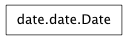
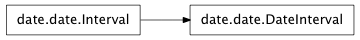
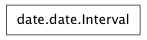
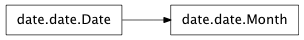
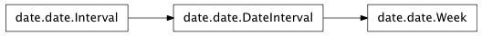
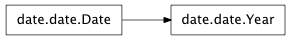

An idealised date (year, month, day).

d = Date(2013,Jan,1) returns a date representing 1-Jan-2013 Date Literals are supported in program source too, e.g. 1-Jan-2013 (!) d.year returns a Date object representing the Year (e.g. 2013) d.month returns a Date object representing the month and Year (e.g. Jan-2013) d.day returns a Date object representing the date, i.e. itself (e.g. 1-Jan-2013) d.weekday, d.week, d.ymd, d.inLeapYear() int(d) returns the Julian day number, Date(n) returns a Date from julian day number n
A Date Interval

Represents a duration (days, months and years).
Add / Subtract durations from Dates, e.g. 1-Jan-2013 + 3*years + 2*months + 15*days
Return the total number of years and months, in whole months (ignoring any days).
An Interval representing a list from start to end, [start..end].

Suitable base class for Date Intervals i = Interval(start,end) returns the Interval starting at start and continuing to end (inclusive) Usage examples: i[0], i[-1], len(i), for x in i, x in i. Requires definitions for i+1, i<=j, i-j Note that either start or end may be None, indicating an open interval.
A Date object representing just a Month and, optionally, a Year.

List operations, e.g. Jan-2013[1], [-1], for d in Jan-2013, len(Jan-2013) 29 in Feb-2013
A Week.

An enumerated type for days of the week (Sun..Sat)
A Date object representing just a Year.

List operations, e.g. for d in Year(2013), len(Year(2013)
Copyright (c) 2003-2007 Gustavo Niemeyer <gustavo@niemeyer.net>
This module offers extensions to the standard python 2.3+ datetime module.